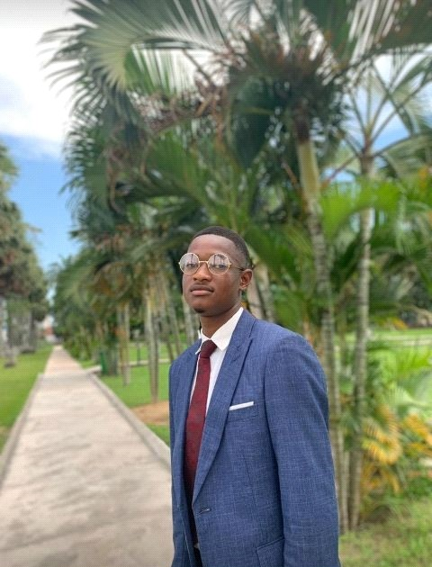
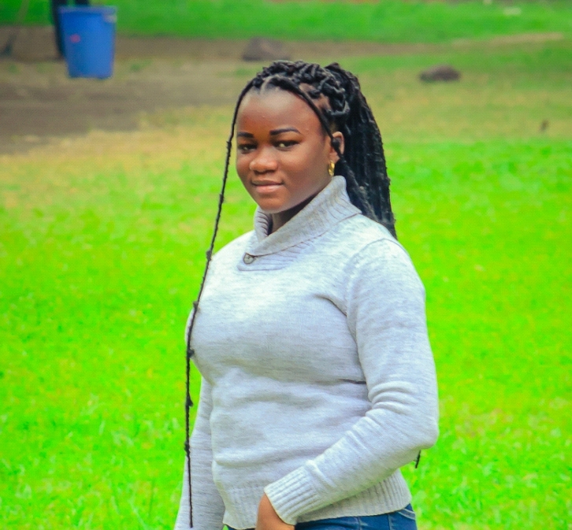
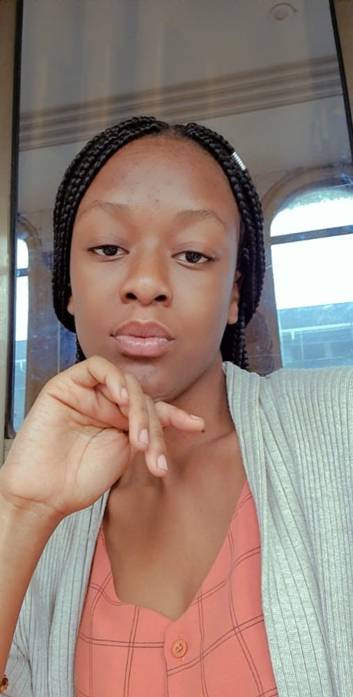
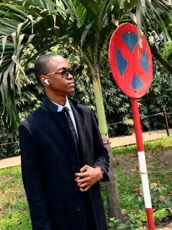

L2 LMD FASI
Kessia NDINDO NGALULA
est une étudiante congolaise en deuxième licence à l’Université Protestante du Congo dans la faculté des sciences informatique , née le 16 /05/2003 à Kinshasa dans une famille de 7 enfants dont elle est l’avant dernière avec 5 filles et 2 garçons , elle est courageuse ,gentille ,sociable et surtout aimée de ses parents. Un enfant modèle ,travailleuse ,bosseuse toujours présente pour ses amies ,pour ses collègues et surtout pour sa famille .
Elle a étudié au lycée bosangani depuis sa tendre enfance jusqu’à obtenir son diplôme, elle a développé pendant ce temps où elle était dans ces quatre murs une passion pour la technologie et a voulu l’exercer dans les locaux de l’UPC pour pouvoir avoir une bonne formation et être meilleure dans tout ce qu’elle entreprend .
Dans ce lycée ,elle a développé l’art oratoire qu’elle exercera à l’avenir car malgré que l’informatique soit sa passion la littérature et tout ce qui englobe cette discipline a toujours sa première passion
 Rachel NGALULA MULU
Rachel NGALULA MULU
est une étudiante congolaise en deuxième année licence à l’Université Protestante au Congo (UPC)/Faculté des Sciences Informatiques (FASI). Elle est née le 18 février 2003 à Kinshasa en RDC. Rachel est la troisième enfant d’une famille de 7 dont 3 filles et 4 garçons.
Quoi que passée par plusieurs écoles en primaire elle a fini ses études primaires ainsi que humanitaires au complexe scolaire Monseigneur MOKE dans la section scientifique option Math-Physique.
Rachel est une chrétienne, membre de l’église chênes de mamré tabernacle croyante du message du temps de la fin apporté par le prophète BRANHAM.
Stanis WITANENE MBILIZI,
né le 11 juin 2000 à KAMITUGA dans la province du Sud-Kivu ; Fils de MBILIZI Firmin et BAHATI Rosine, Je suis l’ainé d’une grande famille composée de 4 garçons et deux filles.
Je suis étudiant en deuxième année de licence du nouveau système LMD à l’Université Protestante au Congo(UPC) dans la Faculté des Sciences Informatiques(FASI).
Jean Gloire WAZENGA GONDWE
est un étudiant congolais en deuxième année licence à l’Université Protestante au Congo (UPC)/Faculté des Sciences Informatiques (FASI). Il est né le 10 AOUT 2000 à Kinshasa en RDC.
Jean Gloire est le deuxième d’une famille de 3 enfants dont 1 fille et 2 garçons.
A fait ses études primaires à l’ecsv (Ecole Chrétienne la Source de Vie) /Gombe, ses études secondaires à Institut Gianelli /Mont Ngafula, a eu son diplôme en 2020.
Il a commencé ses études supérieures à l’ISPT (Institut Supérieur pédagogique et technique), puis continué à l’Upc.
en bref, c’est un mec bien.
Rosie TSHILOMBA MUSANGU
est une étudiante congolaise en deuxième année licence professionnelle à l’université protestante au Congo (UPC) Faculté des Sciences informatiques (FASI).
Né le 16/10/ 2004 à OTTAWA au CANADA. Elle est la troisième d’une famille de 7 dont 5 filles et 2 garçons.
Mon père s’appelle MUSANGU Erick et ma mère s’appelle KANIEMBA JULIE.
J’ai commencé mes études à l’âge de 3 ans à l’école Nationale d’administration publique (ENAP) au Canada, primaire dans la même école, J’ai eu mon Bac avec 63%.
Ma couleur préférée est le ROSE parce que c’est mon nom, et mon plat préféré est l’haricot.
J’adore les bébés et c’est mon premier rêve. Suis une servant de DIEU et j’aime servi mon DIEU avec tout ce que je possède….
Synthia Syntiche MBOMBO
est une étudiante congolaise en deuxième année licence a l’Université protestante au Congo (UPC) / faculté des sciences informatique (FASI) elle ne le 15 Mai 2004 à Kinshasa synthia est la cadette d’une famille de 2 enfants dont un graçon et une seul fille.
 Jérémie-Tall SIBABANZA NDOMBOLO
Jérémie-Tall SIBABANZA NDOMBOLO
est un étudiant congolais en deuxième année licence du système Licence-Master-Doctorat (LMD) en sigle à l’Université Protestante au Congo (UPC) en Faculté des Sciences Informatiques (FASI). Il est né le 28 mai 1900 à Cologne en Allemagne. Jérémie-Tall est l’ainé d‘une famille chrétienne de 6 enfants dont 3 garçons et 3 filles. Il est passionné des sports de combat, Jérémie-Tall est maitre ceinture noire 1ere Dan au Karaté-Shotokan, et entrepreneur.
Jean Joël SENGA MUNDUKISA,
étudiant belgo-congolais en deuxième année licence à l’Université Protestante au Congo(UPC) , Faculté des Sciences Informatiques(FASI). né le 2/03/2002 à Bruxelles en Belgique , deuxième d’une future famille de 4 enfants .en 2008 , retourna à Kinshasa après une mutation de son père pour raison d’étude et de travail faisant son école primaire au collège Bilombe, puis commençant et finissant ses humanité au CS Cardinal Malula en option Bio-Chimie.En 2020, s’inscriva à l’UPC. Ayant comme passion la lecture,le sport, la poésie et cuisine.
 Prosper-israel LUYEYE MVUAMBA
Prosper-israel LUYEYE MVUAMBA
est un étudiant congolais en deuxième année licence à l’Université Protestante au Congo(UPC)/Faculté des Sciences Informatiques(FASI). Il est né le 7 septembre 2001 à Kinshasa en République démocratique du Congo. Deuxième d’une famille de 5, d’un père congolais et d’une mère congolaise tanzanienne.
Jennyfer BWANACHEKO ZALIE
étudiante de SCIENCE
INFORMATIQUE en deuxième année
de licence du système LMD à
l’Université PROTESTANTE DU
CONGO. L’étudiante Bwanacheko
est née à Moanda, le 7 SEPTEMBRE
1997. Bwanacheko Zalie Jennyfer
est l’aînée dans une Famille de quatre enfants dont 2 Filles et 2
Garçons
Generose KIESE MFUTILA
est une étudiante en L2 (lmd) en faculté de sciences informatiques à L'université Protestante au congo.
Elle est née le 15/05/2004 à Kinshasa. Generose est la quatrième dans la famille de 5enfants dont 3 garçons et 2filles.
Sarah META MUSENGA
Née à Kinshasa, le 05 aoùt d’une certaine année, META MUSENGA Sarah est une étudiante Congolaise à l’Univesité Protestante au Congo (UPC) dans la Faculté de Sciences Informatiques(FASI).
Sortie d’une famille de Cinq enfants dont trois garçons et deux filles.
J’occupe la deuxième place et je suis fille ainée!
Divine AMANI TANKWE
est née un certain vendredi 08/11/2004 à Kinshasa, elle est en L2 (LMD)
Sciences informatiques. Étudiante à L'université Protestant au Congo(UPC).
Elle est née dans une famille de 4personnes 2filles et deux garçons, elle est la deuxième dans sa famille.

Jonathan KALALA CIALA
est un étudiant congolais en deuxième année licence à L'université Protestante au Congo (upc) en faculté de sciences informatiques(FASI).
Il est né le 26/09/2000 à Kinshasa. Jonathan est né dans une famille de 5 personnes 3 garçons et 2filles il est troisième dans famille.

Christine AKOLA
est une étudiante congolaise en L2(LMD) faculté des sciences informatiques(FASI) à L'université Protestante au Congo(UPC).
Elle est née le 25/07/2000. Christine est née dans une famille de 5 enfants composée d'un seul garçon et quatre filles dont elle est la Benjamine de sa famille.

Esther MWILAMBWE NYOTA
est une étudiant congolaise en deuxième licence à l’université protestante au Congo (UPC)/Faculté des sciences informatiques (FASI). Elle est née le 14 juillet 2003 à Matadi. Esther est la quatrième d’une famille de 7 enfants dont 3 filles et 4 garçons. Né des parents de tribus différentes, son père mu luba kat du Tanganyika, son nom est MWILAMBWE KABANGA DONAT-TIMOTHEE et sa mère mu songe du Kasaï, son nom est KIMALUA SANGUA MADELEINE. Elle fût ses études primaire, secondaire et humanitaire à Matadi. Après avoir fini ses études humanitaires elle vint à Kinshasa pour débuter ses études universitaires. Elle eût 3 ans d’études maternelles, 6 ans d’études primaires, 2 ans d’études secondaires et 4 ans d’études humanitaires. Actuellement à l’université protestante au Congo en deuxième licence.

Nathan Xavier MBUY TAMFUMU
est un étudiant en FASI, connu de ses collègues sous le sobriquet de «NX».
Concepteur de ce site web.
Premier CP de la promotion, pas premier proprement dit (d'où les guillemets), plutôt « CP Pro-Provisoire », des mots du feu doyen Marcel MUSANGU.
Candidat «Roi UPC» 2021-2022.
Emmanuel NGOYI ILUNGA
est un jeune étudiant congolais de l’Université Protestante au Congo dans la Faculté des Sciences Informatiques, né le 01 Avril 2002 à Kinshasa. Diplômé d’état au Collège Notre Dame du Congo section Scientifique, option Mathématique-Physique.
Jeune programmeur et développeur web et d’applications, il espère poursuivre ses études en Intelligence Artificielle.
Daniel BYAMUNGU
est un étudiant congolais en L2 LMD FASI.
Fan inconditionnel d'Andrew Tate. Il est moins connu sous le nom de « The Sigmatic Male ». Il pratique aussi le Trading, il aime les belles choses, aime parfois s'exprimer avec un langage de yankee ou même en Langila.